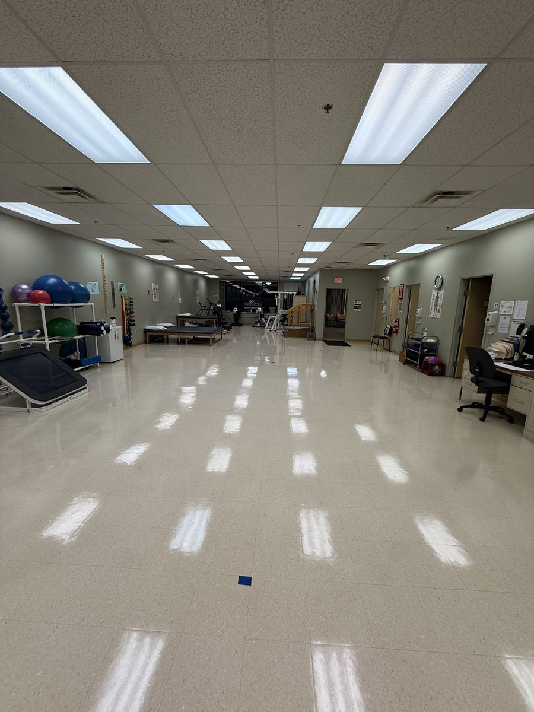

Floor care specialists · Lowell, MA
Floor stripping & waxing that brings back a mirror shine
Strip & wax, buffing, burnishing and scrub & recoat for commercial and residential floors within 25 miles of Lowell, MA and southern New Hampshire.


Floor care is our specialty. We remove old, yellowed finish down to the bare floor, then lay fresh coats of sealer and high-quality wax and burnish them to a deep, long-lasting gloss — just like the results you can see in our gallery.
Between full strips, scheduled buffing, burnishing or a scrub & recoat keep the shine and protect your investment for a fraction of the cost.
What's included
- Full strip of old finish and buildup
- Sealer and multiple coats of commercial floor finish
- High-speed buffing and burnishing
- Deep scrub & recoat without a full strip
- VCT, vinyl, linoleum, terrazzo and sealed concrete
- Night and weekend work to avoid downtime
Ideal for
- Clinics and therapy centers
- Schools and daycares
- Offices and lobbies
- Stores and cafeterias
- Gyms and community halls
How it works
- 1. Tell us about your spaceFill out the quote form or call us. We answer in English and Spanish.
- 2. Free walkthrough & quoteWe visit or review photos and send you a clear price with no surprises.
- 3. We get it doneOur insured crew works on your schedule — days, nights or weekends.
Frequently asked questions
How often should floors be stripped and waxed?
Most commercial floors need a full strip and wax every 6–12 months, with buffing or burnishing every few weeks depending on traffic.
How long before we can walk on the floor?
Light foot traffic is usually fine a few hours after the last coat. We work nights and weekends so the floor is ready when you open.
What types of floors do you strip and wax?
VCT, vinyl, linoleum, terrazzo and sealed concrete. For hardwood, stone or tile we recommend the right cleaning and sealing method during the free walkthrough.
Service area: about 25 miles around Lowell, MA
We serve homes and businesses in Lowell, Dracut, Chelmsford, Tewksbury, Billerica, Westford, Tyngsborough, Lawrence, Methuen, Andover, North Andover, Haverhill, Wilmington, Burlington, Woburn, Bedford, Acton, Littleton in Massachusetts, plus Nashua, Hudson, Salem, Pelham, Windham, Londonderry, Derry, Merrimack in southern New Hampshire.
Ready for a cleaner space?
Tell us what you need and get a free, no-obligation quote within 24 hours.